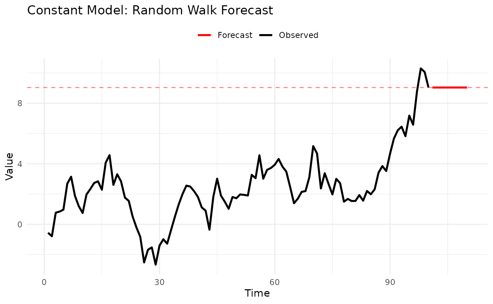
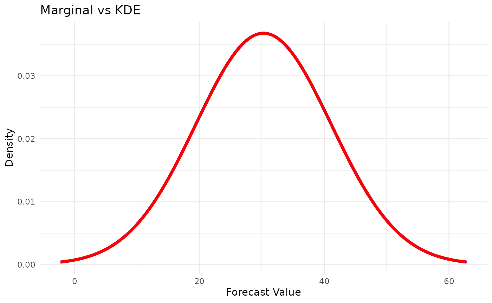
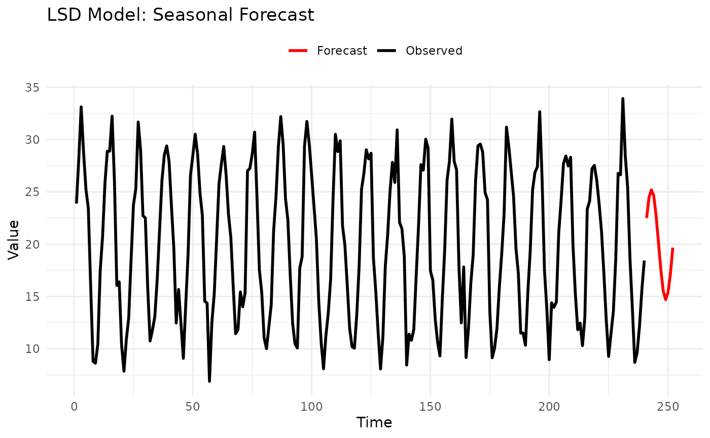
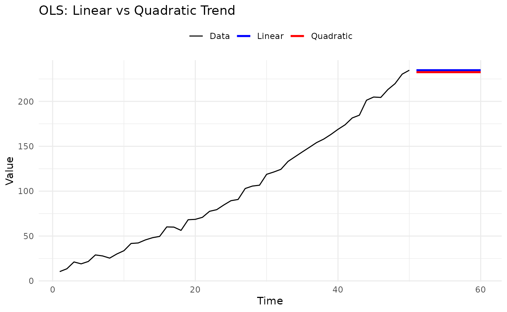
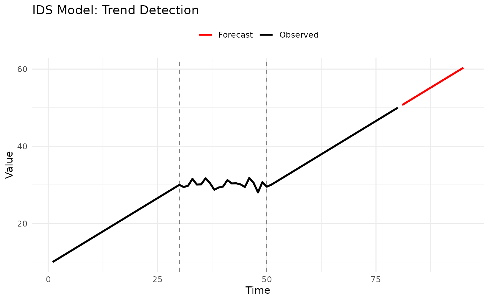
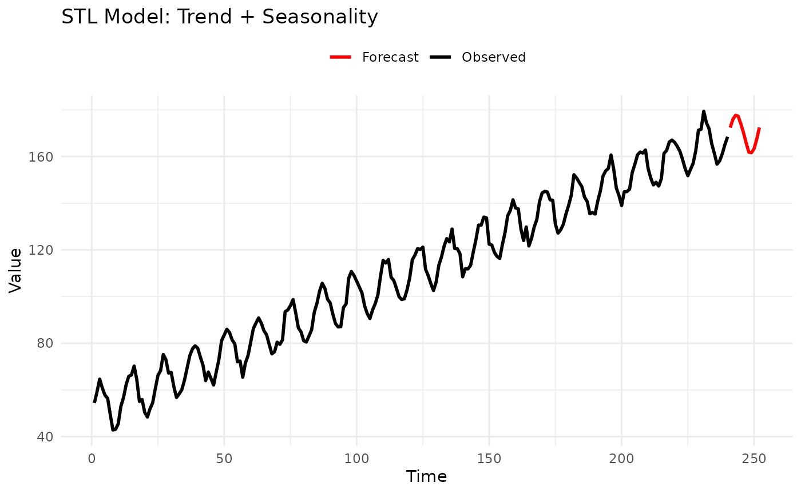
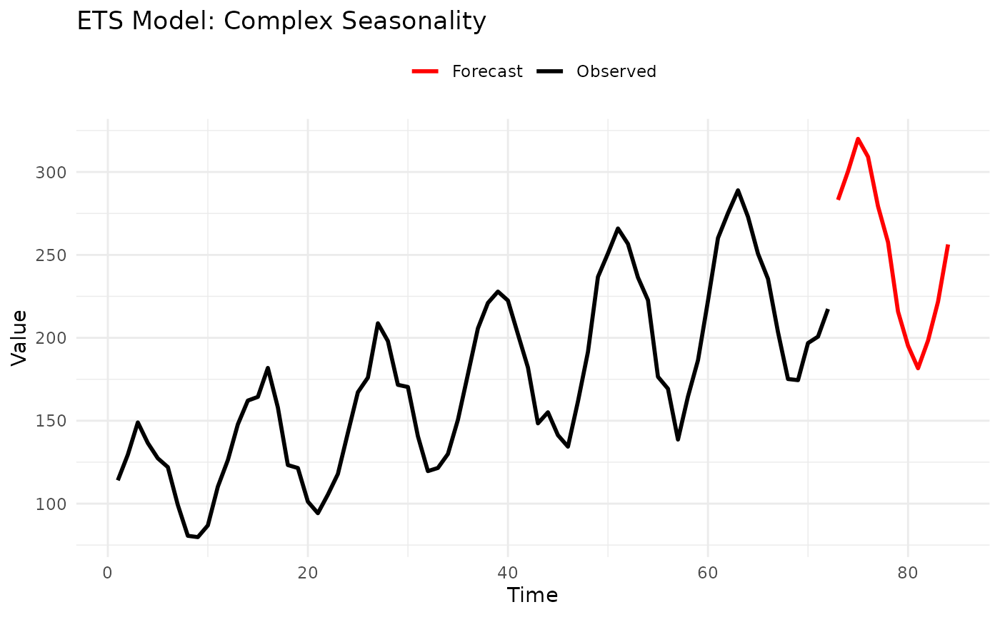

library(forecastbaselines)
#> Julia version 1.11.9 at location /opt/hostedtoolcache/julia/1.11.9/x64/bin will be used.
#> Loading setup script for JuliaCall...
#> Finish loading setup script for JuliaCall.
#> forecastbaselines: Julia backend loaded successfully
library(scoringutils)
library(ggplot2)
setup_ForecastBaselines()
#> Initializing Julia...
#> Julia initialized successfully
#> Checking ForecastBaselines.jl installation...
#> ForecastBaselines.jl is already installed
#> Loading R conversion helpers...
#> forecastbaselines setup complete!forecastbaselines provides 10 baseline forecasting models across three categories:
This vignette provides:
Do you have seasonal patterns?
├─ Yes, strong seasonality
│ ├─ Regular pattern → STLModel(s = period)
│ ├─ Irregular pattern → LSDModel(window_width, s = period)
│ └─ Need decomposition → STLModel(s = period)
├─ No, mostly trend
│ ├─ Polynomial trend → OLSModel(degree)
│ ├─ Step changes → IDSModel(window_size)
│ └─ Complex trend → ARMAModel(p, q)
└─ No clear pattern
├─ Need simple baseline → ConstantModel()
├─ Sample from history → MarginalModel()
└─ Smooth estimates → KDEModel()
Special cases:
- Count data (integers) → INARCHModel(p)
- Multiple components → ETSModel(error_type, trend_type, season_type)
- Quick benchmark → ConstantModel()| Model | Complexity | Data Needs | Seasonality | Trend | Prob. Forecasts |
|---|---|---|---|---|---|
| Constant | Very Low | Minimal (1+) | No | No | Via residuals |
| Marginal | Very Low | 30+ | No | No | Direct |
| KDE | Low | 50+ | No | No | Direct |
| LSD | Low | 2+ cycles | Yes | No | Via residuals |
| OLS | Low | 20+ | No | Yes | Via residuals |
| IDS | Low | 20+ | No | Yes | Via residuals |
| STL | Medium | 2+ cycles | Yes | Yes | Via residuals |
| ARMA | Medium | 50+ | No | No | Parametric |
| INARCH | Medium | 50+ | Yes | No | Parametric |
| ETS | High | 50+ | Yes | Yes | Parametric |
These models provide quick, interpretable forecasts and serve as benchmarks for more complex methods.
Description: The simplest possible forecast - uses the last observed value for all future predictions.
Mathematical Form:
When to Use:
Parameters: None - completely parameter-free.
Example:
# Generate random walk data
set.seed(123)
data <- cumsum(rnorm(100))
# Fit constant model
model <- ConstantModel()
fitted <- fit_baseline(data, model)
# Forecast
fc <- forecast(fitted, interval_method = NoInterval(), horizon = 1:10)
# Visualize
n_data <- length(data)
plot_df <- rbind(
data.frame(time = 1:n_data, value = data, type = "Observed"),
data.frame(time = 101:110, value = fc$mean, type = "Forecast")
)
ggplot(plot_df, aes(x = time, y = value)) +
geom_line(aes(color = type), linewidth = 1) +
geom_hline(yintercept = data[100], linetype = "dashed", color = "red", alpha = 0.5) +
scale_color_manual(values = c("Observed" = "black", "Forecast" = "red")) +
labs(title = "Constant Model: Random Walk Forecast", x = "Time", y = "Value", color = NULL) +
theme_minimal() +
theme(legend.position = "top")
Strengths:
Limitations:
Description: Forecasts by randomly sampling from the empirical distribution of the observed data.
Mathematical Form:
When to Use:
Parameters: None
Example:
# Generate stationary data
set.seed(123)
data <- rnorm(100, mean = 50, sd = 10)
# Fit marginal model
model <- MarginalModel()
fitted <- fit_baseline(data, model)
# Forecast with prediction intervals
fc <- forecast(
fitted,
interval_method = EmpiricalInterval(n_trajectories = 1000),
horizon = 1:10,
levels = c(0.5, 0.95),
model_name = "Marginal"
)
# The forecast mean approximates the historical mean
cat("Historical mean:", mean(data), "\n")
#> Historical mean: 50.90406
cat("Forecast mean:", mean(fc$mean), "\n")
#> Forecast mean: 50.90406
# Quantile forecasts are now available for scoring
set.seed(124)
truth <- 50 + rnorm(10, 0, 10) # Simulated future values
fc_truth <- add_truth(fc, truth)
# Convert to quantile format and show structure
fc_quantile <- scoringutils::as_forecast_quantile(fc_truth)
print(head(fc_quantile, 15)) # Show first few quantiles
#> observed predicted quantile_level horizon model
#> <num> <num> <num> <int> <char>
#> 1: 36.14929 33.76226 0.025 1 Marginal
#> 2: 36.14929 45.17317 0.250 1 Marginal
#> 3: 36.14929 50.23163 0.500 1 Marginal
#> 4: 36.14929 57.15998 0.750 1 Marginal
#> 5: 36.14929 70.45712 0.975 1 Marginal
#> 6: 50.38323 33.76226 0.025 2 Marginal
#> 7: 50.38323 44.43653 0.250 2 Marginal
#> 8: 50.38323 50.23163 0.500 2 Marginal
#> 9: 50.38323 57.22381 0.750 2 Marginal
#> 10: 50.38323 70.44441 0.975 2 Marginal
#> 11: 42.36970 34.37043 0.025 3 Marginal
#> 12: 42.36970 45.12309 0.250 3 Marginal
#> 13: 42.36970 51.04169 0.500 3 Marginal
#> 14: 42.36970 58.49046 0.750 3 Marginal
#> 15: 42.36970 70.44441 0.975 3 MarginalStrengths:
Limitations:
Use Case: Benchmark for comparing autocorrelation benefits. If ARMA doesn’t beat Marginal, your data may not have useful autocorrelation.
Description: Similar to Marginal but uses kernel density estimation for smoother probability distributions.
Mathematical Form:
where is a kernel function and is bandwidth.
When to Use:
Parameters: None (bandwidth selected automatically)
Example:
# Generate bimodal data
set.seed(123)
data <- c(
rnorm(50, mean = 20, sd = 3),
rnorm(50, mean = 40, sd = 3)
)
# Compare Marginal vs KDE
marginal <- fit_baseline(data, MarginalModel())
kde <- fit_baseline(data, KDEModel())
fc_marginal <- forecast(marginal, interval_method = NoInterval(), horizon = 1:100)
fc_kde <- forecast(kde, interval_method = NoInterval(), horizon = 1:100)
# KDE produces smoother samples
# Prepare data for ggplot
marginal_density <- density(fc_marginal$mean)
kde_density <- density(fc_kde$mean)
density_df <- rbind(
data.frame(x = marginal_density$x, y = marginal_density$y, type = "Marginal"),
data.frame(x = kde_density$x, y = kde_density$y, type = "KDE")
)
ggplot(density_df, aes(x = x, y = y, color = type)) +
geom_line(linewidth = 1.5) +
scale_color_manual(values = c("Marginal" = "red", "KDE" = "blue")) +
labs(title = "Marginal vs KDE", x = "Forecast Value", y = "Density", color = NULL) +
theme_minimal() +
theme(legend.position = "topright")
Strengths:
Limitations:
For data with identifiable patterns in time.
Description: Seasonal model that forecasts by averaging values from similar historical periods.
How It Works:
window most recent similar periodsWhen to Use:
Parameters:
window: Number of similar periods to average (default:
1)s: Seasonal period (e.g., 12 for monthly, 7 for
daily)Example:
# Monthly data with seasonality
set.seed(123)
months <- 1:240
seasonal_pattern <- 20 + 10 * sin(2 * pi * months / 12)
data <- seasonal_pattern + rnorm(240, sd = 2)
# Fit LSD model
model <- LSDModel(window_width = 3, s = 12) # Average last 3 years
fitted <- fit_baseline(data, model)
# Forecast next year
fc <- forecast(fitted, interval_method = NoInterval(), horizon = 1:12)
# Plot
n_data <- length(data)
plot_df <- rbind(
data.frame(time = 1:n_data, value = data, type = "Observed"),
data.frame(time = 241:252, value = fc$mean, type = "Forecast")
)
ggplot(plot_df, aes(x = time, y = value, color = type)) +
geom_line(linewidth = 1) +
scale_color_manual(values = c("Observed" = "black", "Forecast" = "red")) +
labs(title = "LSD Model: Seasonal Forecast", x = "Time", y = "Value", color = NULL) +
theme_minimal() +
theme(legend.position = "top")
Parameter Guidance:
s (seasonal period):
window (averaging window):
Strengths:
Limitations:
Description: Fits polynomial trends using ordinary least squares, then forecasts by extrapolating the trend.
Mathematical Form:
When to Use:
Parameters:
degree: Polynomial degree (1 = linear, 2 = quadratic,
etc.)differencing: Order of differencing (default: 0)Example:
# Generate quadratic trend
set.seed(123)
time <- 1:50
data <- 10 + 2 * time + 0.05 * time^2 + rnorm(50, sd = 3)
# Compare linear vs quadratic
linear <- fit_baseline(data, OLSModel(degree = 1))
quadratic <- fit_baseline(data, OLSModel(degree = 2))
fc_linear <- forecast(linear, interval_method = NoInterval(), horizon = 1:10)
fc_quadratic <- forecast(quadratic, interval_method = NoInterval(), horizon = 1:10)
# Plot
n_data <- length(data)
plot_df <- rbind(
data.frame(time = 1:n_data, value = data, type = "Data"),
data.frame(time = 51:60, value = fc_linear$mean, type = "Linear"),
data.frame(time = 51:60, value = fc_quadratic$mean, type = "Quadratic")
)
ggplot(plot_df, aes(x = time, y = value, color = type)) +
geom_line(aes(linewidth = type)) +
scale_linewidth_manual(values = c("Data" = 0.5, "Linear" = 1, "Quadratic" = 1)) +
scale_color_manual(values = c("Data" = "black", "Linear" = "blue", "Quadratic" = "red")) +
labs(title = "OLS: Linear vs Quadratic Trend", x = "Time", y = "Value", color = NULL, linewidth = NULL) +
theme_minimal() +
theme(legend.position = "top")
Parameter Guidance:
degree:
differencing:
degree >= differencing + 1
Strengths:
Limitations:
Tips:
Description: Detects trend direction (increasing, decreasing, stable) over recent windows and extrapolates.
How It Works:
p windowsWhen to Use:
Parameters:
window_size: Number of windows to analyze (default:
3)threshold: Threshold for detecting changes (default:
0.0)Example:
# Generate data with trend change
set.seed(123)
data <- c(
seq(10, 30, length.out = 30), # Increasing
rep(30, 20) + rnorm(20, sd = 1), # Stable
seq(30, 50, length.out = 30) # Increasing again
)
# Fit IDS model
model <- IDSModel(window_size = 3) # Analyze last 3 windows
fitted <- fit_baseline(data, model)
# Forecast
fc <- forecast(fitted, interval_method = NoInterval(), horizon = 1:15)
# Plot
n_data <- length(data)
plot_df <- rbind(
data.frame(time = 1:n_data, value = data, type = "Observed"),
data.frame(time = 81:95, value = fc$mean, type = "Forecast")
)
ggplot(plot_df, aes(x = time, y = value, color = type)) +
geom_line(linewidth = 1) +
geom_vline(xintercept = c(30, 50), linetype = "dashed", alpha = 0.5) +
scale_color_manual(values = c("Observed" = "black", "Forecast" = "red")) +
labs(title = "IDS Model: Trend Detection", x = "Time", y = "Value", color = NULL) +
theme_minimal() +
theme(legend.position = "top")
Parameter Guidance:
p (number of windows):
Strengths:
Limitations:
Description: Decomposes series into seasonal, trend, and remainder components using LOESS, then forecasts each separately.
Mathematical Form:
where is trend, is seasonal, is remainder.
When to Use:
Parameters:
s: Seasonal periodExample:
# Generate trend + seasonality
set.seed(123)
time <- 1:240 # 20 years of monthly data
trend <- 0.5 * time
seasonal <- 10 * sin(2 * pi * time / 12)
data <- 50 + trend + seasonal + rnorm(240, sd = 2)
# Fit STL model
model <- STLModel(s = 12)
fitted <- fit_baseline(data, model)
# Forecast next year
fc <- forecast(fitted, interval_method = NoInterval(), horizon = 1:12)
# Plot
n_data <- length(data)
plot_df <- rbind(
data.frame(time = 1:n_data, value = data, type = "Observed"),
data.frame(time = 241:252, value = fc$mean, type = "Forecast")
)
ggplot(plot_df, aes(x = time, y = value, color = type)) +
geom_line(linewidth = 1) +
scale_color_manual(values = c("Observed" = "black", "Forecast" = "red")) +
labs(title = "STL Model: Trend + Seasonality", x = "Time", y = "Value", color = NULL) +
theme_minimal() +
theme(legend.position = "top")
Parameter Guidance:
s (seasonal period): Same as LSD model guidanceStrengths:
Limitations:
Use Case: Preferred over LSD when trend is important, or when you need to analyze seasonal and trend components separately.
Statistical models with parametric probability distributions.
Description: Classic time series model combining autoregressive (AR) and moving average (MA) components.
Mathematical Form:
where .
When to Use:
Parameters:
p: Autoregressive orderq: Moving average orderExample:
# Generate AR(1) process
set.seed(123)
n <- 200
data <- numeric(n)
data[1] <- rnorm(1)
for (i in 2:n) {
data[i] <- 0.7 * data[i - 1] + rnorm(1)
}
# Fit ARMA(2,1)
model <- ARMAModel(p = 2, q = 1)
fitted <- fit_baseline(data, model)
# Forecast with prediction intervals
fc <- forecast(
fitted,
interval_method = EmpiricalInterval(n_trajectories = 1000),
horizon = 1:20,
levels = c(0.5, 0.95),
model_name = "ARMA(2,1)"
)
# Add simulated truth and visualize with intervals
set.seed(456)
truth <- numeric(20)
truth[1] <- 0.7 * data[200] + rnorm(1)
for (i in 2:20) {
truth[i] <- 0.7 * truth[i - 1] + rnorm(1)
}
fc_truth <- add_truth(fc, truth)
fc_quantile <- scoringutils::as_forecast_quantile(fc_truth)
# Show quantile forecast structure
print(head(fc_quantile, 15))
#> observed predicted quantile_level horizon model
#> <num> <num> <num> <int> <char>
#> 1: -2.64651490 -3.0532104 0.025 1 ARMA(2,1)
#> 2: -2.64651490 -1.8735702 0.250 1 ARMA(2,1)
#> 3: -2.64651490 -1.2528488 0.500 1 ARMA(2,1)
#> 4: -2.64651490 -0.5709904 0.750 1 ARMA(2,1)
#> 5: -2.64651490 1.2804917 0.975 1 ARMA(2,1)
#> 6: -1.23078488 -2.5489403 0.025 2 ARMA(2,1)
#> 7: -1.23078488 -1.3998319 0.250 2 ARMA(2,1)
#> 8: -1.23078488 -0.8751294 0.500 2 ARMA(2,1)
#> 9: -1.23078488 -0.1682574 0.750 2 ARMA(2,1)
#> 10: -1.23078488 1.7020715 0.975 2 ARMA(2,1)
#> 11: -0.06067475 -2.3424184 0.025 3 ARMA(2,1)
#> 12: -0.06067475 -1.0874471 0.250 3 ARMA(2,1)
#> 13: -0.06067475 -0.4711444 0.500 3 ARMA(2,1)
#> 14: -0.06067475 0.2061740 0.750 3 ARMA(2,1)
#> 15: -0.06067475 1.6094645 0.975 3 ARMA(2,1)Parameter Guidance:
How to choose p and q:
Strengths:
Limitations:
Tips:
Description: Designed for count data (non-negative integers), models conditional mean and variance with ARCH-type dynamics.
Mathematical Form:
When to Use:
Parameters:
p: Order of lagss: Seasonal period (optional)Example:
# Generate count data
set.seed(123)
# Simulate Poisson AR process
lambda <- 10
data <- numeric(100)
data[1] <- rpois(1, lambda)
for (i in 2:100) {
mu <- 5 + 0.5 * data[i - 1]
data[i] <- rpois(1, mu)
}
# Fit INARCH(1)
model <- INARCHModel(p = 1)
fitted <- fit_baseline(data, model)
# Forecast
fc <- forecast(fitted, interval_method = NoInterval(), horizon = 1:10)
# Forecasts are counts
print(fc$mean)
#> [1] 8.771931 9.145271 9.325835 9.413164 9.455401 9.475828 9.485708 9.490486
#> [9] 9.492797 9.493915Parameter Guidance:
p (lag order):
s (seasonality):
Strengths:
Limitations:
Use Cases:
Description: Exponential smoothing state space models covering 30 different combinations of error, trend, and seasonal components.
Components:
When to Use:
Parameters:
error: “A” (additive) or “M” (multiplicative) or NULL
(auto)trend: “N”, “A”, “M”, “Ad”, “Md”, or NULL (auto)season: “N”, “A”, “M”, or NULL (auto)s: Seasonal period (if seasonal)Example:
# Generate multiplicative seasonal data
set.seed(123)
time <- 1:72
trend <- 100 + 2 * time
seasonal_mult <- 1 + 0.3 * sin(2 * pi * time / 12)
data <- trend * seasonal_mult * exp(rnorm(72, sd = 0.05))
# Automatic selection
model_auto <- ETSModel()
fitted_auto <- fit_baseline(data, model_auto)
# Specific: Multiplicative error, additive trend, multiplicative season
model_specific <- ETSModel(error_type = "M", trend_type = "A", season_type = "M", s = 12)
fitted_specific <- fit_baseline(data, model_specific)
# Forecast
fc <- forecast(fitted_specific,
interval_method = NoInterval(),
horizon = 1:12
)
# Plot
n_data <- length(data)
plot_df <- rbind(
data.frame(time = 1:n_data, value = data, type = "Observed"),
data.frame(time = 73:84, value = fc$mean, type = "Forecast")
)
ggplot(plot_df, aes(x = time, y = value, color = type)) +
geom_line(linewidth = 1) +
scale_color_manual(values = c("Observed" = "black", "Forecast" = "red")) +
labs(title = "ETS Model: Complex Seasonality", x = "Time", y = "Value", color = NULL) +
theme_minimal() +
theme(legend.position = "top")
Model Selection Guide:
Error type:
Trend type:
Season type:
Common Models:
ETS(A,N,N): Simple exponential smoothingETS(A,A,N): Holt’s linear trendETS(A,A,A): Additive Holt-WintersETS(A,A,M): Multiplicative seasonalityETS(M,M,M): Fully multiplicativeStrengths:
Limitations:
Tips:
# Simulated retail sales: trend + seasonality + promotions
set.seed(123)
months <- 1:240
trend <- 1000 + 20 * months
seasonal <- 200 * sin(2 * pi * months / 12) # Holiday peaks
noise <- rnorm(240, sd = 50)
data <- trend + seasonal + noise
# Try multiple models
models <- list(
Naive = ConstantModel(),
LSD = LSDModel(window_width = 3, s = 12),
STL = STLModel(s = 12),
ETS = ETSModel(error_type = "A", trend_type = "A", season_type = "A", s = 12)
)
# Fit all models
results <- lapply(names(models), function(name) {
fitted <- fit_baseline(data, models[[name]])
fc <- forecast(fitted, interval_method = NoInterval(), horizon = 1:12)
data.frame(
Model = name,
Forecast_Mean = mean(fc$mean)
)
})
comparison <- do.call(rbind, results)
print(comparison)
#> Model Forecast_Mean
#> 1 Naive 5760.923
#> 2 LSD 3417.800
#> 3 STL 5858.771
#> 4 ETS 5924.238
# Recommendation: STL or ETS for trend + seasonality
# Daily page views (count data)
set.seed(456)
days <- 100
data <- rpois(days, lambda = 100 + 0.5 * 1:days)
# Count-specific models
models <- list(
Marginal = MarginalModel(), # Ignore trend
INARCH = INARCHModel(p = 1) # Model count dynamics
)
# Compare
# INARCH should perform better due to trend
# Recommendation: INARCH for count data with patterns
# Daily returns (stationary, no trend/season)
set.seed(789)
data <- rnorm(200, mean = 0.001, sd = 0.02)
# Stationary models
models <- list(
Marginal = MarginalModel(),
ARMA = ARMAModel(p = 1, q = 1)
)
# For returns, ARMA captures autocorrelation
# Marginal is baseline
# Recommendation: ARMA if autocorrelation present, else MarginalDon’t know where to begin?
ConstantModel() - it’s fast and shows what
“no model” looks likeSTLModel(s = period)
ARMAModel(p = 1, q = 1)
score() functionstruth parametervignette("forecastbaselines") for basic
workflowvignette("transformations") for data
preprocessing?ARMAModel,
?forecast, etc.
# Simple Baselines
ConstantModel()
MarginalModel()
KDEModel()
# Seasonal/Trend
LSDModel(window_width = 3, s = 12)
OLSModel(degree = 1, differencing = 0)
IDSModel(window_size = 3)
STLModel(s = 12)
# Advanced
ARMAModel(p = 1, q = 1)
INARCHModel(p = 1, s = NULL)
ETSModel(error_type = "A", trend_type = "N", season_type = "N", s = NULL)